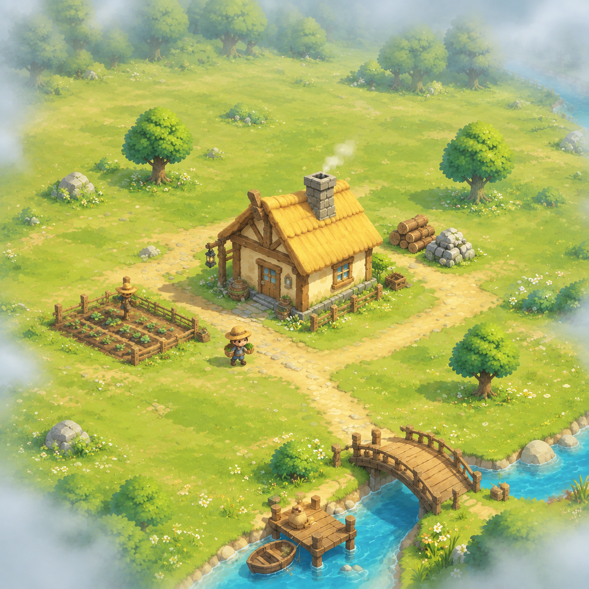
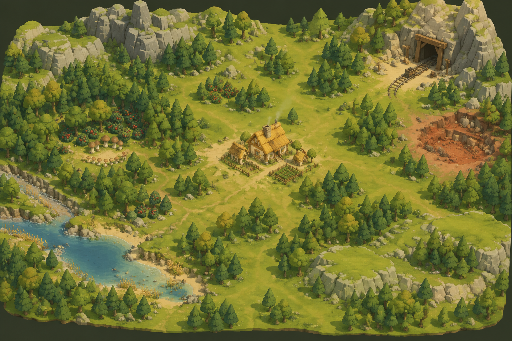
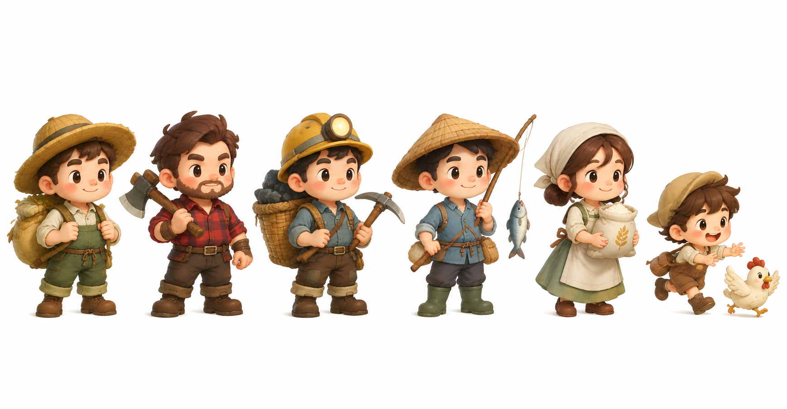
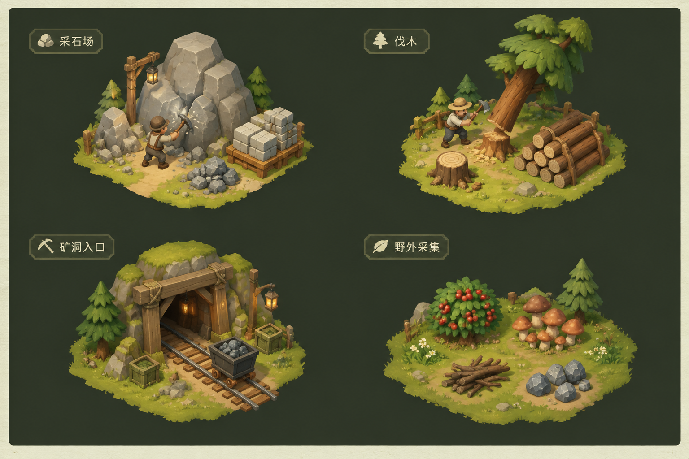
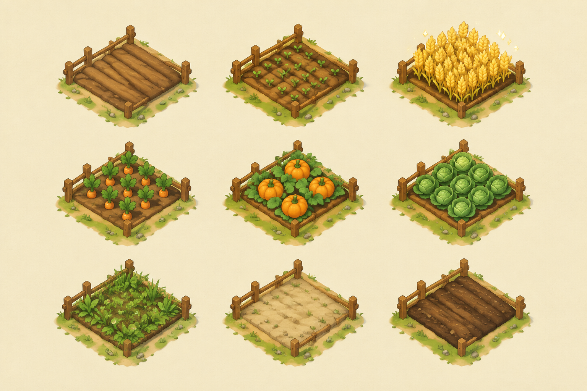
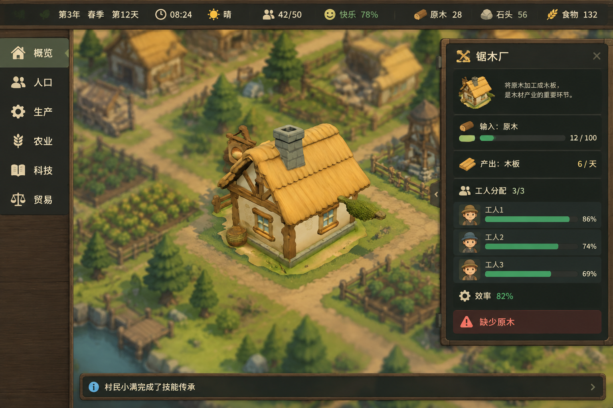
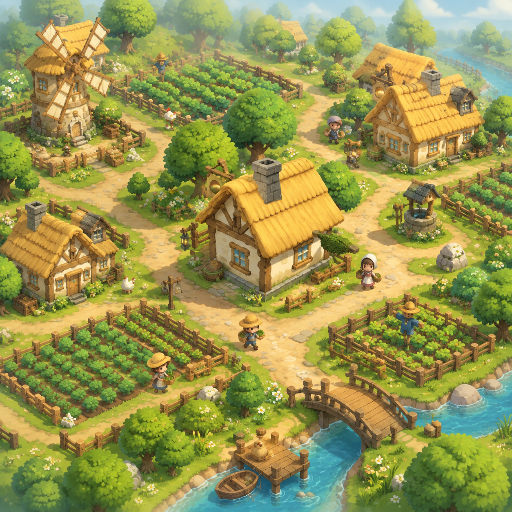
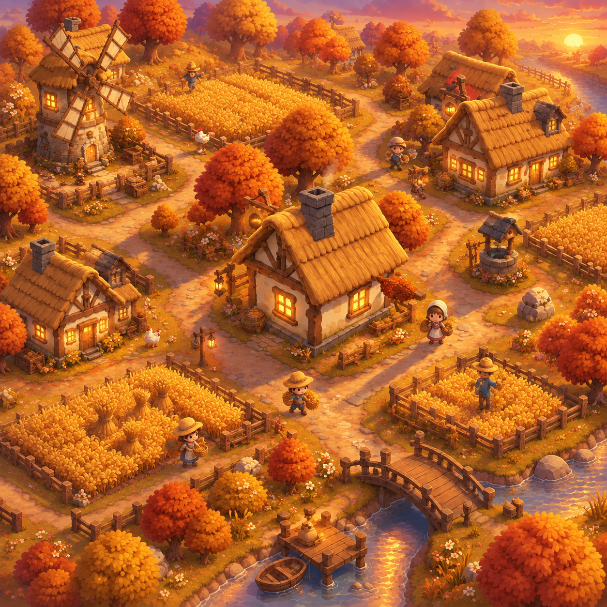
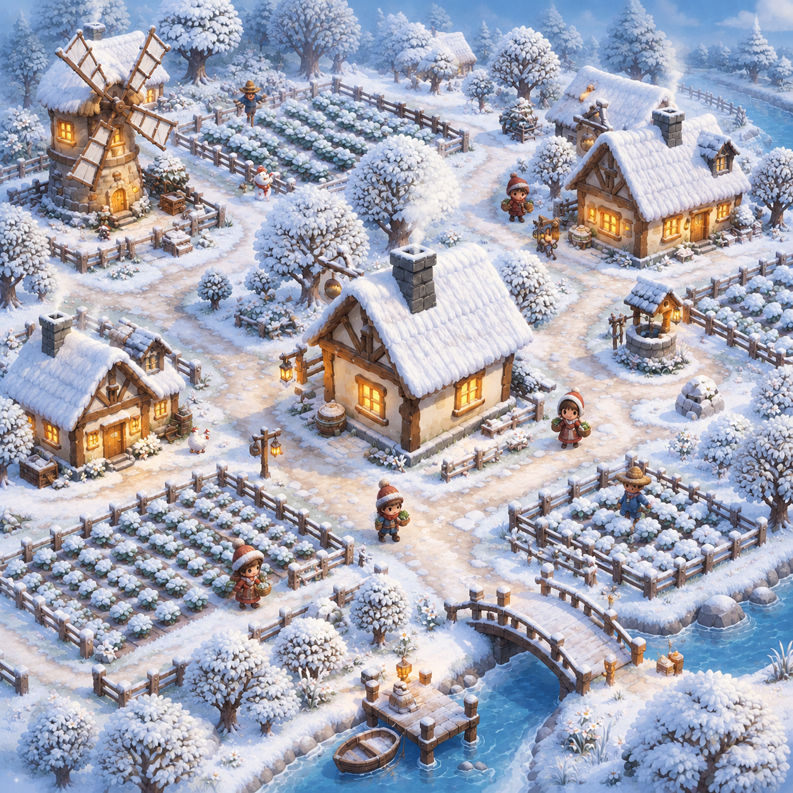

开局 · V1 切片
迷雾边缘、孤木屋、一块田。

村庄只是地图中央一小部分，60%以上是被荒野覆盖的资源区：起伏丘陵与石质山脊（不可建筑区）、梯田台地、裸岩山地+矿洞口、红棕色黏土坑、森林深处的浆果丛群与野猪空地、钓鱼浅滩。地形起伏真实（对应 S2 地形数据 / S21 资源分布 / S37 地形改造），资源点远离村庄、需要规划采集路线。

大头小身（约1:2头身比）Q版比例，每职业有标志性道具与配色：农夫（草帽麻袋）/ 樵夫（格衫斧头）/ 矿工（头灯矿帽+矿石筐）/ 渔夫（斗笠鱼竿）/ 磨坊工（头巾面粉袋）/ 小孩（追鸡）。3D 建模与骨骼动画按此设定执行。

四组标准交互场景：采石场（大岩石+裂纹进度+石料堆）、伐木（倾斜的树+年轮树桩+原木堆）、矿洞入口（木支撑+铁轨矿车+灯笼）、野外采集（浆果丛/蘑菇/枯枝）。交互反馈元素：裂纹、碎屑、进度闪光的画法都在此定调。

三行九块：上行小麦生长三阶段（犁沟→发芽→成熟闪光）；中行作物种类（胡萝卜/南瓜/卷心菜）；下行特殊状态（杂草入侵需除草/贫瘠浅色土壤/施肥深色沃土）。统一规格：1x1 地块、木栅栏边角、褐色犁沟。

PC 模拟经营的信息密集界面（对标《最远的边陲》/Timberborn），不是手游金框：左侧领域导航（概览/人口/生产/农业/科技/贸易）、顶部状态条（年/季/日+时钟+天气+人口+快乐+五资源）、右侧滑入的生产链面板（输入库存条/产出速率/工人分配/效率%/红色缺料警告）、底部事件滚动条。视觉语言：扁平克制、深色半透明底+细木纹、米白文字、语义色（绿=盈/红=亏/黄=警/蓝=信息）、图标+进度条为主。
此版本 UI 底色与 3D 场景渲染语言一致（同一锚点生成）。对照：style-ui.png（手游金框，否决）、style-ui-mgmt.png（油画风底，渲染语言不一致）。

迷雾边缘、孤木屋、一块田。

基线色板：暖黄+草绿。

金麦浪、橙红树冠、长影。

雪覆、暖窗、炊烟。
| 要素 | 定案 |
|---|---|
| 视角 | 45° 等距上帝视角，可缩放（宏观看布局、捏近看村民） |
| 造型 | 圆润低模 + 手绘质感贴图；不规则轮廓（拒绝素材感）；村民 1:2 头身 Q 版 |
| 色板 | 暖板：茅草黄 #E8C060 / 草绿 #7CB45B / 木棕 #7D5430 / 白墙 #F0E0BD / 天蓝 #A8D8E8；季节整板替换 |
| 光照 | 暖阳单向光+软阴影+轻雾；冬转冷光+暖窗点光；黄昏长影 |
| UI | 深木框+羊皮纸+黄铜金边+手绘图标，圆角，与世界观融合 |
| 交互反馈 | 采矿裂纹/伐木倾斜/收获闪光/选中绿色轮廓圈——都用"手绘感"反馈而非科技感 |
| 元素 | 资产来源 |
|---|---|
| 茅草木屋（主角建筑） | 概念图即定稿参考 → AI 3D 生成+人工重拓扑（同 WoodCabin 流程） |
| 树木花丛岩石 | Quaternius Stylized Nature MegaKit（68件已入库）✔ |
| 农田与作物 | Kenney Food Kit 作物 + 农田程序化网格（贴图按④图风格绘制） |
| 风车/水井/石桥/码头 | Kenny Fantasy Town Kit + Quaternius Farm Buildings + Watercraft |
| 栅栏/灯笼/木桶 | Kenney Survival Kit + Town Kit ✔ |
| 村民小人 | Kenney Mini Characters 打底 + ②图设定定制六大职业外观 |
| 牛羊鸡 | Quaternius Farm Animal Pack（待下载） |
| 矿洞/铁轨矿车 | 待补：暂无现成，需 AI 生成或自制低模 |